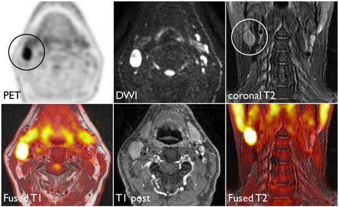

Logistic regression
Lecture 19
When last we left our heros…
We have been studying regression:
What combinations of data types have we seen?
What did the picture look like?
Recap: simple linear regression
Numerical response and one numerical predictor:
Recap: simple linear regression
Numerical response and one categorical predictor (two levels):

Recap: multiple linear regression
Numerical response; numerical and categorical predictors:

Today: a binary response
\[ y = \begin{cases} 1 & &&\text{eg. Yes, Win, True, Heads, Success}\\ 0 & &&\text{eg. No, Lose, False, Tails, Failure}. \end{cases} \]

Who cares?
If we can model the relationship between predictors (\(x\)) and a binary response (\(y\)), we can use the model to do a special kind of prediction called classification.
Example: is the e-mail spam or not?
\[ \mathbf{x}: \text{word and character counts in an e-mail.} \]

\[ y = \begin{cases} 1 & \text{it's spam}\\ 0 & \text{it's legit} \end{cases} \]
Ethical concerns?
Example: is it cancer or not?
\[ \mathbf{x}: \text{features in a medical image.} \]

\[ y = \begin{cases} 1 & \text{it's cancer}\\ 0 & \text{it's healthy} \end{cases} \]
Ethical concerns?
Example: will they default?
\[ \mathbf{x}: \text{financial and demographic info about a loan applicant.} \]

\[ y = \begin{cases} 1 & \text{applicant is at risk of defaulting on loan}\\ 0 & \text{applicant is safe} \end{cases} \]
Ethical concerns?
Example: will they re-offend?
\[ \mathbf{x}: \text{info about a criminal suspect and their case.} \]


\[ y = \begin{cases} 1 & \text{suspect is at risk of re-offending pre-trial}\\ 0 & \text{suspect is safe} \end{cases} \]
Ethical concerns?
How do we model this type of data?

Straight line of best fit is a little silly

Instead: S-curve of best fit
Instead of modeling \(y\) directly, we model the probability that \(y=1\):

- “Given new email, what’s the probability that it’s spam?’’
- “Given new image, what’s the probability that it’s cancer?’’
- “Given new loan application, what’s the probability that they default?’’
Why don’t we model y directly?
-
Recall regression with a numerical response:
- Our models do not output guarantees for \(y\), they output predictions that describe behavior on average;
-
It’s similar for regression with a binary response:
- Our models cannot directly guarantee that \(y\) will be zero or one, only characterize the likelihood.
So, what is this S-curve, anyway?
It’s the logistic function:
\[ \text{Prob}(y = 1) = \frac{e^{\beta_0+\beta_1x}}{1+e^{\beta_0+\beta_1x}}. \]
If you set p = Prob(y = 1) and do some algebra, you get the simple linear model for the log-odds:
\[ \log\left(\frac{p}{1-p}\right) = \beta_0+\beta_1x. \]
This is called the logistic regression model.
Log-odds?
p = Prob(y = 1) is a probability. A number between 0 and 1;
p / (1 - p) is the odds. A number between 0 and \(\infty\);
“The odds of this lecture going well are 10 to 1.”
- The log odds log(p / (1 - p)) is a number between \(-\infty\) and \(\infty\), which is suitable for the linear model.
Logistic regression
\[ \log\left(\frac{p}{1-p}\right) = \beta_0+\beta_1x. \]
The logit function log(p / (1-p)) is an example of a link function that transforms the linear model to have an appropriate range;
This is an example of a generalized linear model;
Estimation
We estimate the parameters \(\beta_0,\,\beta_1\) using maximum likelihood (don’t worry about it) to get the “best fitting” S-curve;
The fitted model is
\[ \log\left(\frac{\widehat{p}}{1-\widehat{p}}\right) = b_0+b_1x. \]
Logistic regression -> classification?
Step 1: pick a threshold
Select a number \(0 < p^* < 1\):

- if \(\text{Prob}(y=1)\leq p^*\), then predict \(\widehat{y}=0\);
- if \(\text{Prob}(y=1)> p^*\), then predict \(\widehat{y}=1\).
Step 2: find the “decision boundary”
Solve for the x-value that matches the threshold:

- if \(\text{Prob}(y=1)\leq p^*\), then predict \(\widehat{y}=0\);
- if \(\text{Prob}(y=1)> p^*\), then predict \(\widehat{y}=1\).
Step 3: classify a new arrival
A new person shows up with \(x_{\text{new}}\). Which side of the boundary are they on?

- if \(x_{\text{new}} \leq x^\star\), then \(\text{Prob}(y=1)\leq p^*\), so predict \(\widehat{y}=0\) for the new person;
- if \(x_{\text{new}} > x^\star\), then \(\text{Prob}(y=1)> p^*\), so predict \(\widehat{y}=1\) for the new person.
Let’s change the threshold?
A new person shows up with \(x_{\text{new}}\). Which side of the boundary are they on?

- if \(x_{\text{new}} \leq x^\star\), then \(\text{Prob}(y=1)\leq p^*\), so predict \(\widehat{y}=0\) for the new person;
- if \(x_{\text{new}} > x^\star\), then \(\text{Prob}(y=1)> p^*\), so predict \(\widehat{y}=1\) for the new person.
Nothing special about one predictor…
Two numerical predictors and one binary response:

“Multiple” logistic regression
On the probability scale:
\[ \text{Prob}(y = 1) = \frac{e^{\beta_0+\beta_1x_1+\beta_2x_2+...+\beta_mx_m}}{1+e^{\beta_0+\beta_1x_1+\beta_2x_2+...+\beta_mx_m}}. \]
For the log-odds, a multiple linear regression:
\[ \log\left(\frac{p}{1-p}\right) = \beta_0+\beta_1x_1+\beta_2x_2+...+\beta_mx_m. \]
Decision boundary, again
It’s linear! Consider two numerical predictors:

- if new \((x_1,\,x_2)\) below, \(\text{Prob}(y=1)\leq p^*\). Predict \(\widehat{y}=0\) for the new person;
- if new \((x_1,\,x_2)\) above, \(\text{Prob}(y=1)> p^*\). Predict \(\widehat{y}=1\) for the new person.